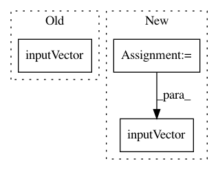

6eb57a4f0a564359e23f0427cf72b0736210112e,cube/models/vocoder.py,BeeCoder,learn,#BeeCoder#,119
Before Change
noise[
self.UPSAMPLE_COUNT * mgc_index:self.UPSAMPLE_COUNT * mgc_index + 2 * self.UPSAMPLE_COUNT])
loss = dy.l1_distance(output, dy.inputVector(wave[
self.UPSAMPLE_COUNT * mgc_index:self.UPSAMPLE_COUNT * mgc_index + self.UPSAMPLE_COUNT]))
losses.append(loss)
cnt += self.UPSAMPLE_COUNT
After Change
self.UPSAMPLE_COUNT * mgc_index:self.UPSAMPLE_COUNT * mgc_index + 2 * self.UPSAMPLE_COUNT])
// reconstruction error
t_vect = wave[self.UPSAMPLE_COUNT * mgc_index:self.UPSAMPLE_COUNT * mgc_index + self.UPSAMPLE_COUNT]
loss = dy.squared_distance(output, dy.inputVector(t_vect))
// dynamic error
o1 = dy.pickrange(output, 0, self.UPSAMPLE_COUNT - 1)
o2 = dy.pickrange(output, 1, self.UPSAMPLE_COUNT)
In pattern: SUPERPATTERN
Frequency: 3
Non-data size: 3
Instances
Project Name: tiberiu44/TTS-Cube
Commit Name: 6eb57a4f0a564359e23f0427cf72b0736210112e
Time: 2018-11-04
Author: tibi@racai.ro
File Name: cube/models/vocoder.py
Class Name: BeeCoder
Method Name: learn
Project Name: tiberiu44/TTS-Cube
Commit Name: 1e15171f195d8094055eb8f460953fd6a840d9aa
Time: 2018-10-28
Author: tibi@racai.ro
File Name: cube/models/vocoder.py
Class Name: BeeCoder
Method Name: learn
Project Name: tiberiu44/TTS-Cube
Commit Name: 9cf2bcdb24f23a17ec11e69b8885851771dfd3d8
Time: 2018-10-25
Author: boros@adobe.com
File Name: cube/models/vocoder.py
Class Name: BeeCoder
Method Name: learn